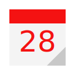

<div class="crumb">
	<ul itemscope itemtype="https://schema.org/BreadcrumbList">
		<li itemprop="itemListElement" itemscope
				itemtype="https://schema.org/ListItem">
			<a itemprop="item" href="{{ site.url }}/">
				<span itemprop="name">Network Worms</span>
			</a>
			<meta itemprop="position" content="1">
		</li>
		<li itemprop="itemListElement" itemscope
				itemtype="https://schema.org/ListItem">
			<a itemprop="item" href="{{ site.url }}/blog/">
				<mark itemprop="name">Blog</mark>
			</a>
			<meta itemprop="position" content="2">
		</li>
	</ul>
</div>
<p>
	In this page you can find all posts from our site.
</p>
{% for post in paginator.posts %}
	<section class="post">
		<h4><a href="{{ post.url }}">{{ post.title }}</a></h4>
		<p>{{ post.excerpt }}</p>
		<span class="pubDat">
			
			{{ post.date | date: "%d.%m.%Y" }}
		</span>
	</section>
{% endfor %}
{% if paginator.total_pages > 1 %}
	<ul>
		{% if paginator.previous_page %}
			<li><a href="{{ paginator.previous_page_path }}">Back</a></li>
		{% else %}
			<li>Back</li>
		{% endif %}
			<li>Page {{ paginator.page }} from {{ paginator.total_pages }}</li>
		{% if paginator.next_page %}
			<li><a href="{{ paginator.next_page_path }}">Next</a></li>
		{% else %}
			<li class="next">Next</li>
		{% endif %}
	</ul>
{% endif %}